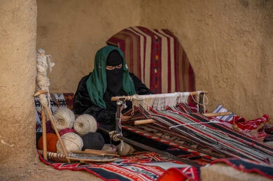

فن الحياكة البدوية
ُيعدّ فن حياكة السدو من أقدم ال ِحرف التقليدية في الحياة البدوية، حيث يعكس مهارة وإبداع المرأة البدوية في نسج الأقمشة يدوياً باستخدام صوف الأغنام أو وبر الإبل. يتميز السدو بنقوشه الهندسية وألوانه الزاهية التي تحمل رموزاً ثقافية تعبّر عن البيئة الصحراوية والحياة البدوية. لم يكن السدو مجرد حرفة، بل كان جز ًءا أساس ًيا من حياة البدو، حيث ُيستخدم في صناعة بيوت الشعر والسجاد والمفروشات، مما يجسد التكيف مع البيئة والاعتماد على الموارد الطبيعية. واليوم، لا يزال هذا الفن يحظى باهتمام واسع، حيث أُدرج ضمن قائمة التراث الثقافي غير المادي لليونسكو، تأكيدًا على أهميته في الهوية التراثية السعودية